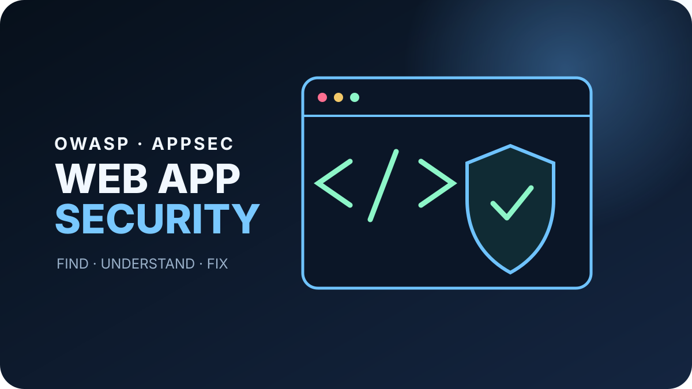
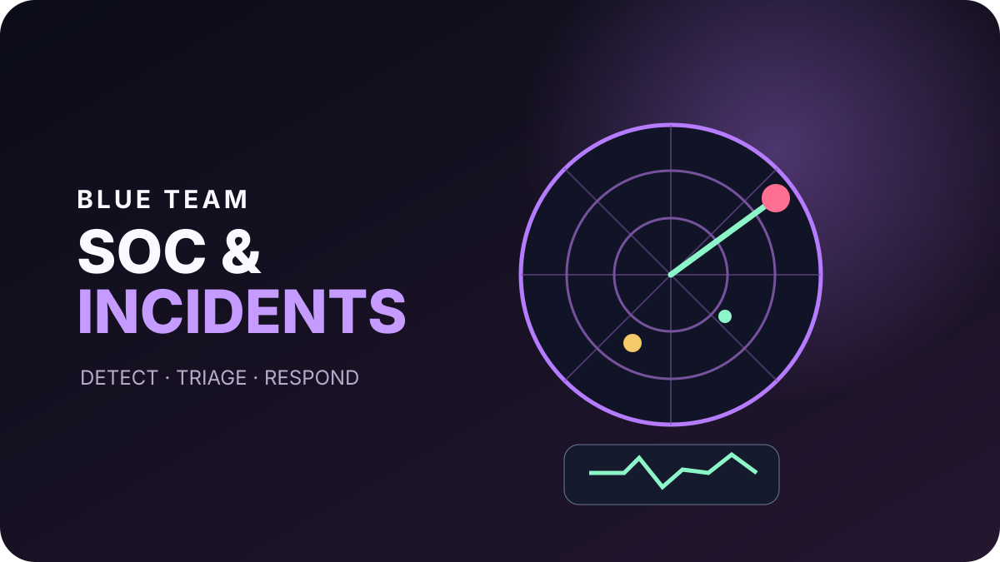
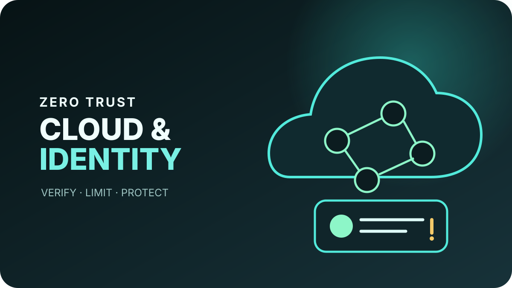
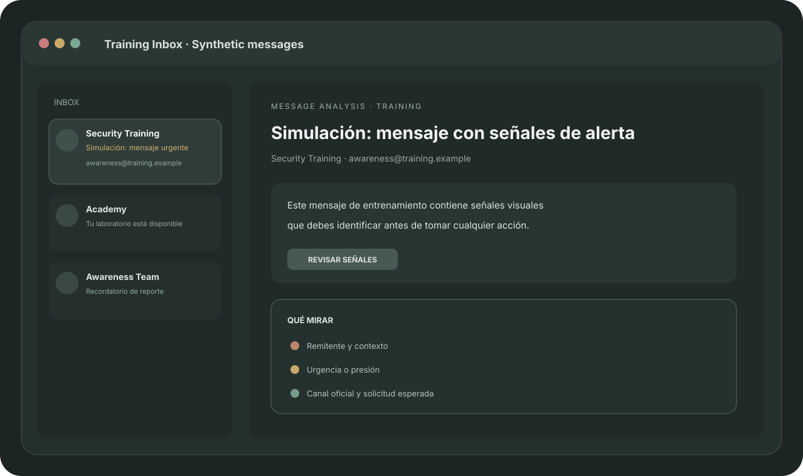

TU RUTA ACTUAL
Cyber Defender Professional
Nivel 772%
1,250 / 2,000 XP
🔥12Racha⬡48Labs🏆7Certificados
Tu misión de hoy: proteger, detectar y responder.
 OFENSIVA
OFENSIVAIdentifica, analiza y reporta amenazas de ingeniería social.

DEFENSIVAOWASP Top 10 con práctica y mitigaciones seguras.

DEFENSIVADetecta, analiza y responde a incidentes como profesional.

FUNDAMENTOSProtege identidades y servicios bajo principios Zero Trust.

LABAnaliza un correo sintético y toma la decisión correcta.
$ nmap -sV 10.10.10.25 22/tcp open ssh 80/tcp open http 443/tcp open httpsLAB
Observa servicios de un objetivo sintético en sandbox.
Analiza eventos sintéticos y detecta actividad anómala.
SELECT user FROM demo_users WHERE id = ? ✓ parameterizedLAB
Reconoce el patrón inseguro y selecciona la mitigación correcta.
Activa autenticación multifactor en todas tus cuentas. Es una de tus mejores defensas.
Ir a Seguridad de Cuenta →